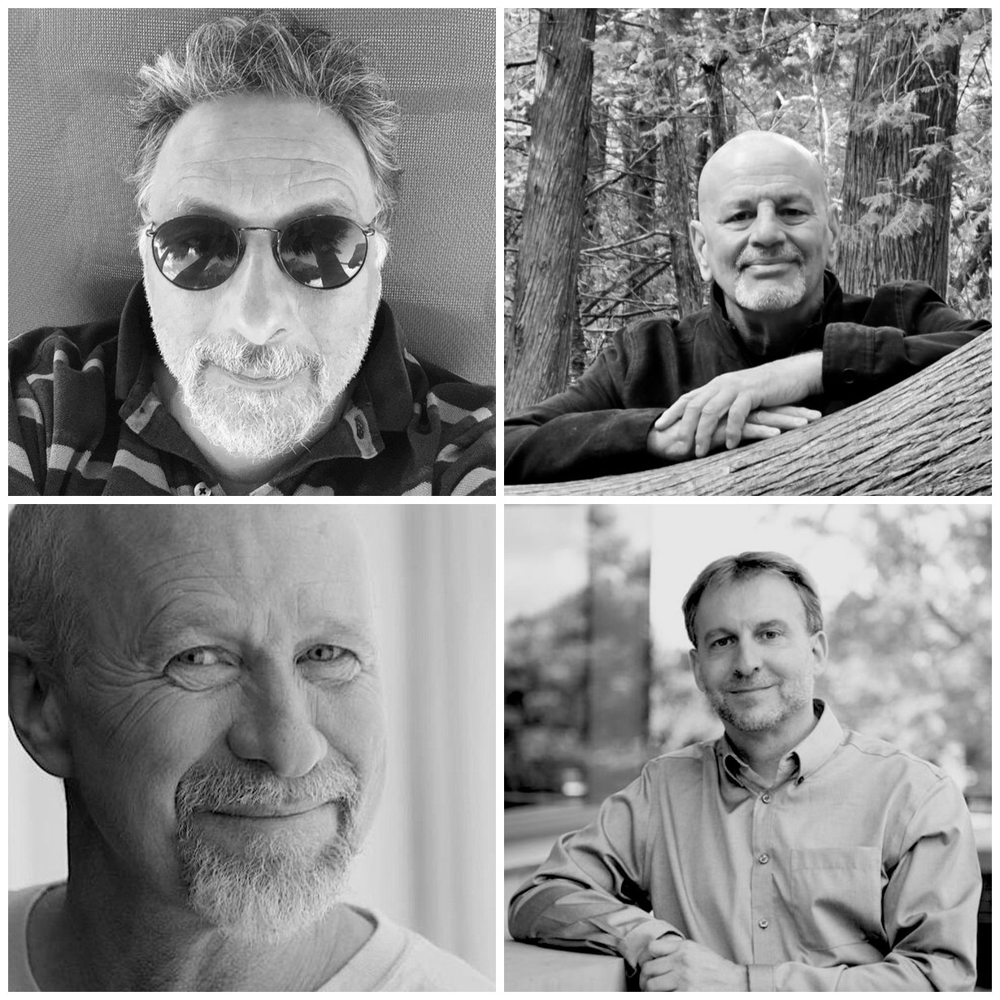
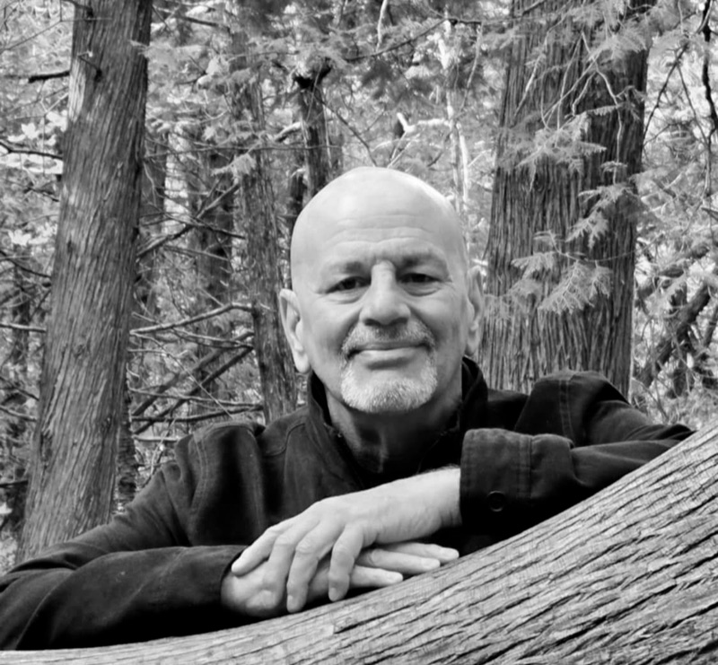
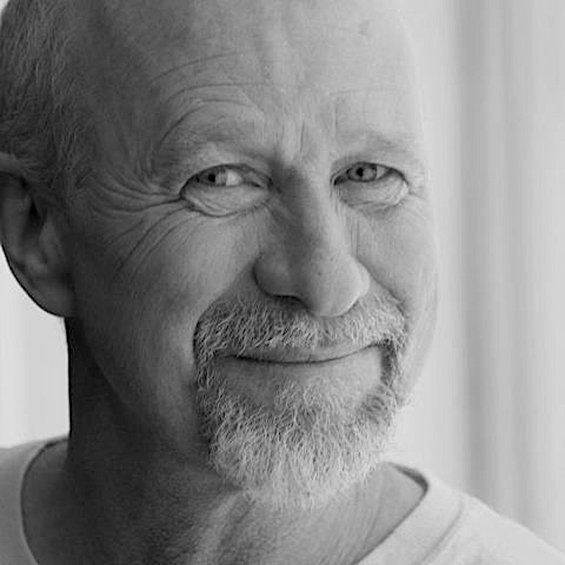

Instrumental rock, classical, world & TV themes — live from Ottawa.
Next show Date TBA · Venue TBA Details soonAbout
Offbeet is an instrumental quartet based in Ottawa, blending electric guitar, bass, drums, and keyboards into a layered live sound. Originals and covers drawing on rock, classical, world music — and the occasional TV theme.

Members
-
Fabio Katz
Electric guitar · Mandolin · Chapman Stick
A classical and jazz background from childhood, classical guitar from age 13, and rock bands in Argentina and Ottawa. Composes the originals and arranges the covers, blending rock, classical, and jazz.
-

Jim Gamo
Drums
On the drums since age 12, through blues and classic rock bands and a stint as a full-time musician in the early 1980s — including work with Lee Aaron. Draws on reggae, Latin, funk, Afrobeat, and rock.
-

Dan Sharon
Bass
Picked up the bass chasing Motown grooves and never put it down. Years of pit bands, blues trios, and late-night jams taught him that the low end works best when you barely notice it — until it stops.
-
Rob Coplan
Keyboards
Classically trained, side-tracked early by vintage synths and Hammond organ. Brings orchestral colour and the occasional space-age wobble, and owns more keyboards than the rest of the band has instruments.
Music
Shows & Tickets
Next show: Date TBA · Venue TBA · Price TBA
How to get tickets
- Send an Interac e-transfer to offbeetottawa@gmail.com
- In the transfer message, include your name and the number of tickets
- We'll reply to confirm — your name will be on the list at the door
No payment processor, no fees — just an e-transfer and a confirmation email.
Contact
Bookings, questions, or just want to say hi:
offbeetottawa@gmail.com